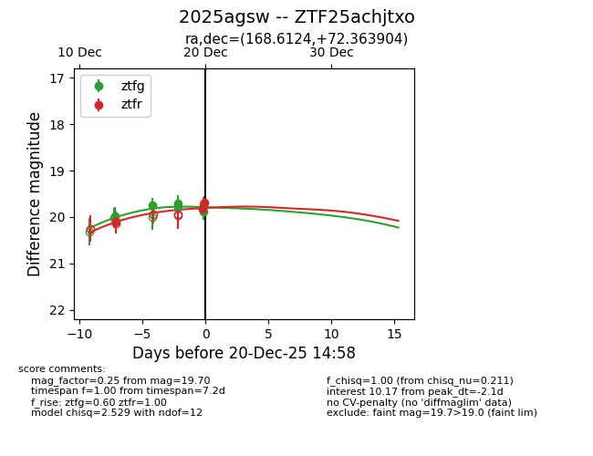
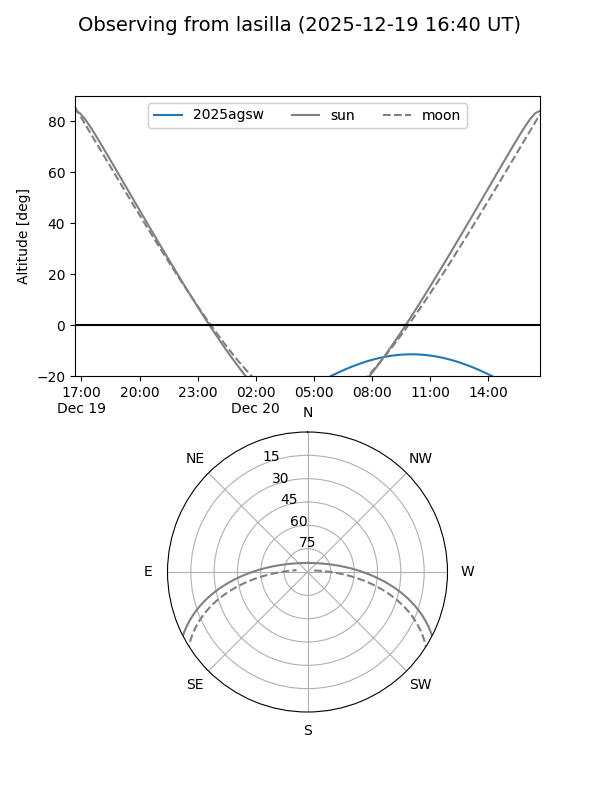
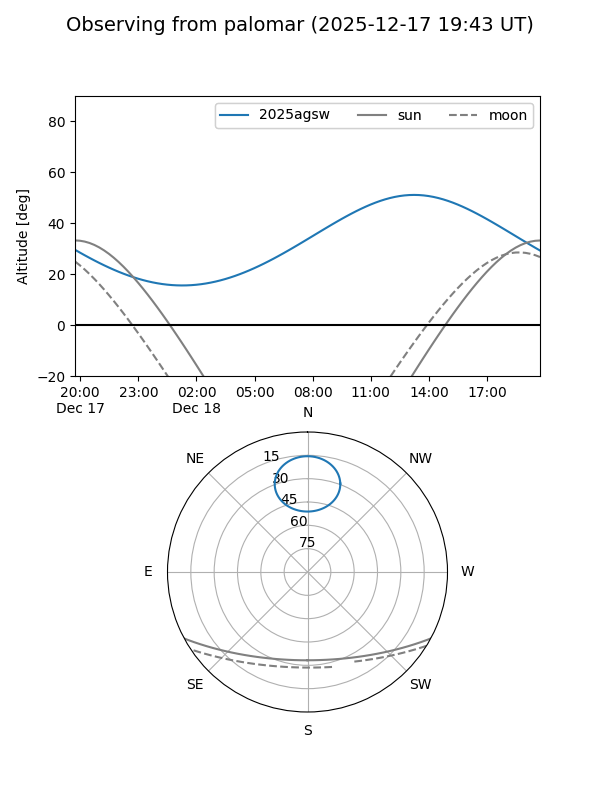
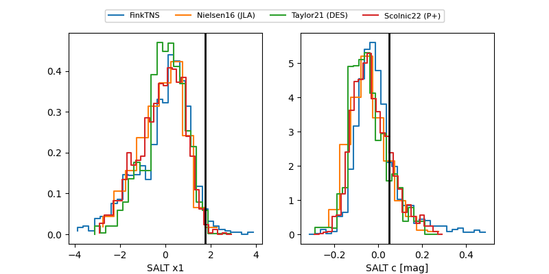

2025agsw
Target 2025agsw at 2025-12-22 18:51
Aliases and brokers:
FINK: fink-portal.org/ZTF25achjtxo
Lasair: lasair-ztf.lsst.ac.uk/objects/ZTF25achjtxo
ALeRCE: alerce.online/object/ZTF25achjtxo
TNS: wis-tns.org/object/2025agsw
YSE: ziggy.ucolick.org/yse/transient_detail/2025agsw
alt names
ZTF25achjtxo (ztf,fink_ztf)
2025agsw (tns,yse)
Coordinates:
equatorial (ra, dec) = 168.6124,+72.36390
equatorial (HMS+DMS) = 11:14:26.96,+72:21:50.05
galactic (l, b) = (132.7070,+42.87535)
Flags:
Photometry:
last ztfg=19.89, ztfr=19.82
6 ztfg, 4 ztfr detections
Lightcurve

Visibility


Additional plots
